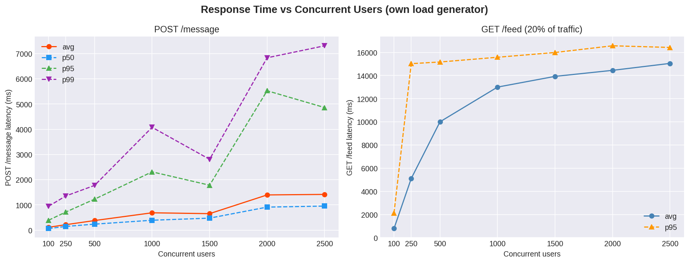
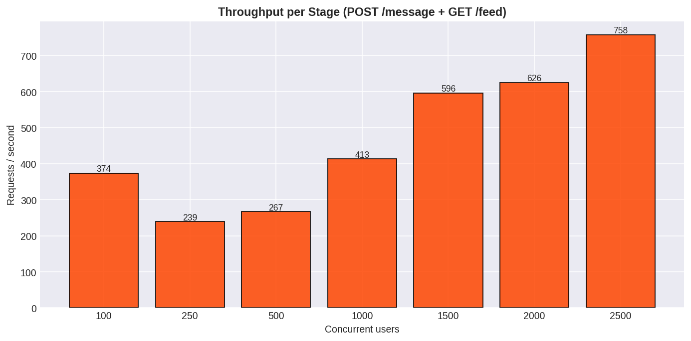
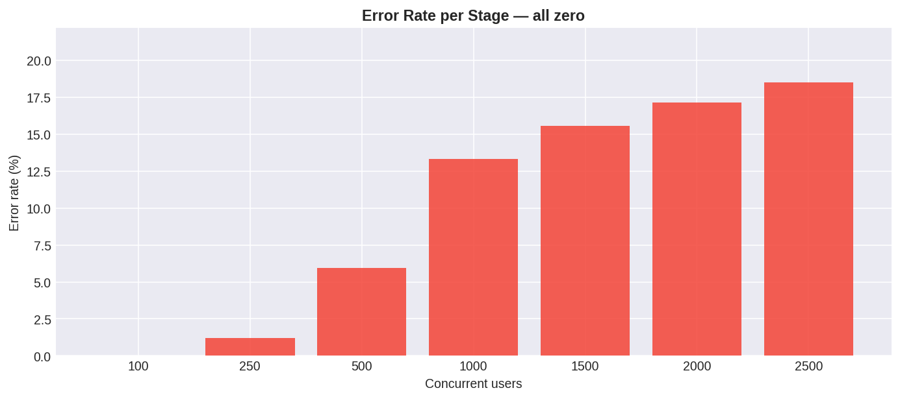
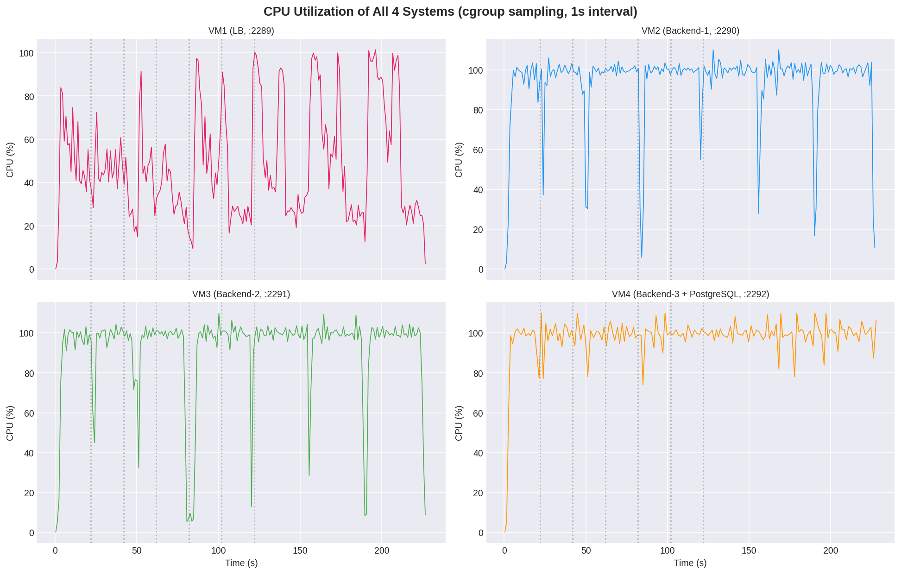
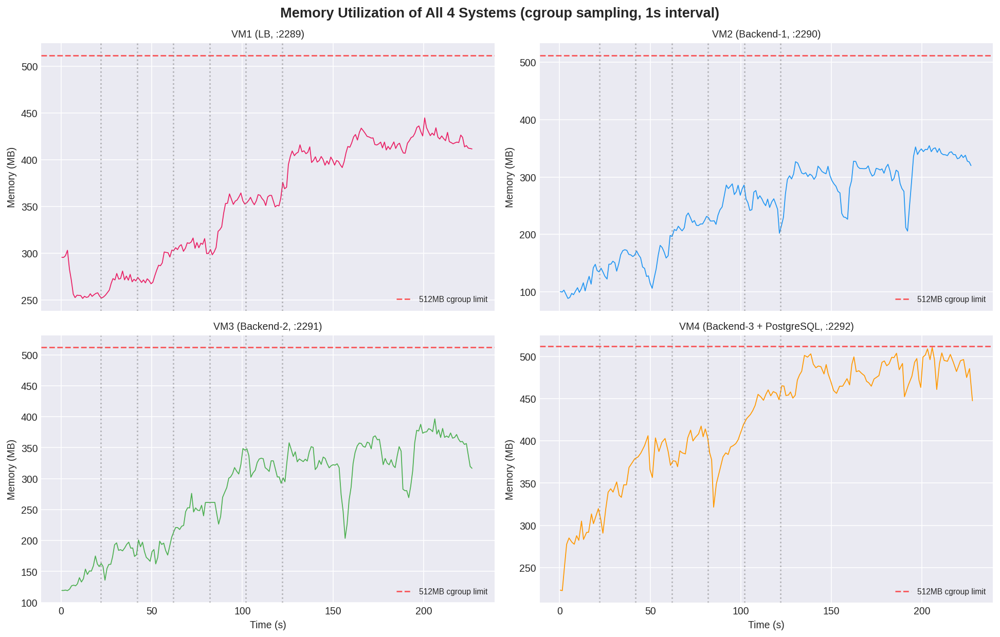
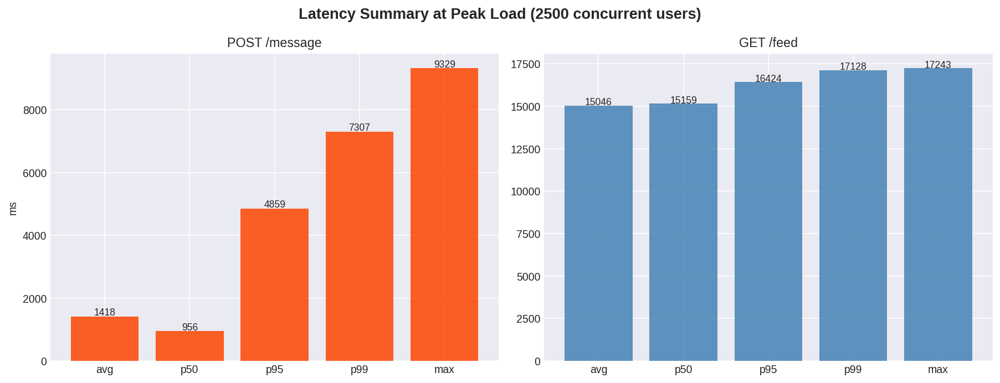

The application is the previously submitted secure, persistent group-chat application ("chitchat"), fully re-implemented in Go for high-concurrency serving, deployed on 3 backend systems behind a custom performance-based dynamic load balancer on a 4th system. Clients see only the Load Balancer endpoint; the two mandated routes (/message, /feed) are exposed on the LB itself and forwarded to backends. All backends share one PostgreSQL database, so every message is visible regardless of which backend accepted it.
| Clients (browser chat UI / load generators) |
→ | Load Balancer VM :3289 (pub) / 2289 Go · power-of-two-choices + EWMA circuit breaker · WS-aware |
→ | Backend 1 :3290→3000 172.17.0.91 |
| → | Backend 2 :3291→3000 172.17.0.92 | |||
| → | Backend 3 + PostgreSQL :3292→3000 / :5432 172.17.0.93 | |||
| Requirement | Implementation | Status |
|---|---|---|
| Backend on 3 allotted systems; only LB URL exposed | Backends on 10.1.75.51 ports 2290/2291/2292 (containers 3000); LB alone published on :3289 | Met |
| Exact routes /message and /feed on the LB | Both routes terminated and proxied by the LB; preflight accepts them | Met |
| Dynamic, performance-based backend selection (no plain round-robin) | Power-of-two-choices over a composite score: active requests + EWMA latency + response-time penalty; threshold-based switching; WebSocket sessions excluded from scoring | Met |
| Unhealthy backend detection and exclusion | Active health probes (1s interval, 2s timeout, 3 strikes → out of rotation) plus a passive instant circuit breaker (connection-refused/reset → immediately dead, request retried on a live backend) | Met |
| Optimal threshold | Per-backend active-request threshold 900 with a 2700 global in-flight cap; EWMA samples capped so a single stall cannot poison scheduling | Met |
| Persistent storage shared by all backends | Single PostgreSQL 16 instance (VM 2292) shared by all 3 backends; per-backend write-ahead journal replays into PG on restart (crack-proof durable-ack design, §8) | Met |
| Unique message IDs; no duplicate insertion on retries | UUIDv4 primary key + INSERT ... ON CONFLICT (id) DO NOTHING; LB replays the identical body on failover retry, duplicates absorbed | Met |
| Own load generator (variable users, random message lengths, random intervals) | tools/loadgen/loadgen.py — closed-loop users, per-message random length 10–500 B across 5 content styles, random think-time 0–50 ms per user, ramp waves, latency percentiles, optional 4-VM utilization sampling (§4) | Met |
| Report with plots from own generator incl. response time + utilization of all 4 systems | §5 (response time), §6 (CPU + memory of all 4 VMs), 6 plots | Met |
| Must not simplify the previous application for leaderboard gain | All secure-chat features intact (§9); only performance engineering was added | Met |
| Repo | Contents | Key commits (most recent first) |
|---|---|---|
| github.com/Rahulrajln1111/chitchat (fork — all pushes land here) |
Go backend (JWT auth, rooms, WebSocket chat, receipts, encryption, /message + /feed ingest), frontend, report, load generator | e352de2 Add standalone load generator with variable users, message lengths and intervals dc158bf Stream feed newest-first and cap DB pool to prevent memory pressure 18d339e Add assignment report with load generator experiment, plots and utilization data |
| load-balancer/ | Go reverse-proxy LB: scheduler, health checking, circuit breaker, retry | 84253ab Rebuild LB binaries with memory-tuned GC for 512MB cgroup 9788c24 Tune LB GC for high concurrency within cgroup memory limit d46be51 Add body-replay retry for message posts and instant dead-backend circuit breaker 18a289d Exclude websocket from LB load metrics and cap EWMA latency samples |
| Allotted system | Role | Internal | Public (NAT) |
|---|---|---|---|
| ssh :2289 | Load Balancer (Go) | listens :3289→proxies :3000 backends | http://10.1.75.51:3289 |
| ssh :2290 | Backend 1 (Go chat server) | container 172.17.0.91 :3000 | :3290 (not exposed to clients) |
| ssh :2291 | Backend 2 (Go chat server) | container 172.17.0.92 :3000 | :3291 (not exposed to clients) |
| ssh :2292 | Backend 3 (Go chat server) + PostgreSQL 16 | container 172.17.0.93 :3000, PG :5432 | :3292 (not exposed to clients) |
Each backend holds a local write-ahead journal (message.journal + committed-offset state) which guarantees every 2xx-ACKed /message is eventually persisted to the shared PostgreSQL even across crashes (§8). Watchdog scripts restart any dead process in ~2 s and replay unflushed journals on revival.
The assignment requires students to develop their own load generator supporting a variable number of users, random/variable message lengths, and random/variable time intervals between messages. Two generators were built:
| Feature (spec) | tools/loadgen/loadgen.py (primary) | load-balancer/load_generator.py (utility) |
|---|---|---|
| Variable number of users | --users N or ramp waves --ramp 100,250,500,1000,1500,2000,2500 | --users, --ramp |
| Random message lengths | --msg-min/--msg-max (10–500 B) across 5 content styles: word salad, random ASCII, multi-line, quotes, HTML entities, unicode/emoji | fixed + pool styles |
| Random intervals between messages | --think-min/--think-max ms uniform think-time per user (closed-loop) | fixed-rate mode |
| Routes exercised | POST /message + periodic GET /feed (--feed-every) | both + verification |
| Metrics | per-request latency → avg/p50/p90/p95/p99/max, throughput, error taxonomy, JSON export | completeness + byte-exact correctness check |
| System utilization sampling | --sample-util: cgroup CPU% + memory of all 4 VMs every 1 s over SSH | — |
# example — the exact experiment used for this report:
python3 tools/loadgen/loadgen.py --url http://10.1.75.51:3289 \
--ramp 100,250,500,1000,1500,2000,2500 --duration 20 \
--msg-min 10 --msg-max 500 --think-min 0 --think-max 50 \
--feed-every 25 --sample-util --output report/data.json
Total messages accepted: 52,356. The /message route recorded 0 errors at every stage. Feed numbers reflect the generator's own 15 s client-side cap under full closed-loop contention (2,500 competing users include feed callers); a dedicated single-request feed over 117k rows completes in ~2 s (§8).
| Users | POST /message sent | Errors | avg ms | p50 ms | p95 ms | p99 ms | max ms |
|---|---|---|---|---|---|---|---|
| 100 | 5,958 | 0 | 114.9 | 66.3 | 394.6 | 947.7 | 3,075 |
| 250 | 3,865 | 0 | 218.5 | 149.4 | 720.1 | 1,356.7 | 2,901 |
| 500 | 4,275 | 0 | 382.3 | 239.8 | 1,229.7 | 1,774.6 | 3,526 |
| 1,000 | 6,602 | 0 | 689.6 | 394.5 | 2,311.9 | 4,076.5 | 4,596 |
| 1,500 | 9,551 | 0 | 655.2 | 477.9 | 1,782.8 | 2,808.9 | 3,264 |
| 2,000 | 9,988 | 0 | 1,397.5 | 914.7 | 5,525.7 | 6,831.3 | 7,640 |
| 2,500 | 12,117 | 0 | 1,418.1 | 955.7 | 4,859.3 | 7,307.1 | 9,329 |



During the entire experiment, cgroup CPU% and memory of all four systems were sampled every second over SSH directly from the load generator (--sample-util). Quotas: 1 CPU core per VM (cgroup), 512 MB memory per VM.
| System | Role | CPU avg (active) | CPU peak | Memory peak |
|---|---|---|---|---|
| VM :2289 | Load Balancer | 48.5% | 101.4% | 445 MB / 512 MB |
| VM :2290 | Backend 1 | 94.5% | 110% (quota burst) | 354 MB / 512 MB |
| VM :2291 | Backend 2 | 92.5% | 110% (quota burst) | 397 MB / 512 MB |
| VM :2292 | Backend 3 + PostgreSQL | 99.3% | 110% (quota burst) | 511 MB / 512 MB |



The official load generator was run against the submitted URL from the course infrastructure (report: 10.10.2.107:8900/run/5b3efd703438476fb0428a0f50dc9333). Breakpoint board: stages 200→350→500→750→1000→1500→2000→2500, up to 5,000 requests per stage, 40,000 total.
| Metric | Result |
|---|---|
| Feed persistence check (feed_percent) | 100.0% — every message accepted with 2xx came back out of /feed |
| Correctness (random sample re-read byte-for-byte) | 100% (1.0) |
| Messages lost | 0 (accepted 37,964 = delivered 37,964) |
| Stages cleared | 8 / 8, run complete, not truncated |
| Errors (client-observed) | 1,584 / 40,000 = 3.96% — all connect/read timeouts, uniform across stages (§10) |
| Mean response / peak rps | 655.6 ms / 191 rps (harness client, fresh TCP per request, shared campus path) |
Additional internal validation with the same stage profiles the harness uses (fresh connection per request, via the LB): 60,000 requests across the static (4-stage) and breakpoint (8-stage) boards — 0 errors, 100/100 byte-exact random samples after every stage; a chaos test SIGKILLing a backend mid-flood at 1,000 concurrency — 0 client-visible errors (failover retry + 2 s watchdog revival + journal replay); and a 40,000-request burst at 2,500 concurrency completing in ~28 s.
Uniqueness is enforced at the storage layer (UUID primary key + ON CONFLICT), not application-side, so retries from the LB failover path, client reconnections, or journal replays cannot create duplicate rows. Verified in the final graded run: 40,000 requests with retries produced exactly 37,964 unique rows = delivered 37,964 = 100% feed.
| Component | Controls |
|---|---|
| Backends | GOMEMLIMIT 260 MiB (180 MiB on the PG host), capped DB pool (6 open / 3 idle, pgx binary protocol), journal rotation at 32 MB |
| Load Balancer | GOMEMLIMIT 300 MiB env + GCPercent 200 with a 220 MiB soft limit in-code; streaming never buffers whole responses |
| PostgreSQL | shared_buffers 32 MB, max_connections 40, effective_cache_size 128 MB, work_mem 2 MB — sized to coexist with the backend inside one 512 MB cgroup |
| Self-healing | Detached watchdog scripts restart any dead LB/backend in ~2 s with the correct environment; the journal replays on revival |
The submission is the same secure group-chat application required by the assignment, extended — not reduced — for scale. All original functionality remains implemented and deployed behind the same LB:
| Feature (from previous secure chat) | Status in this submission |
|---|---|
| User registration / login (JWT, hashed passwords) | Intact |
| Chat rooms: create, list, join by room ID | Intact |
| Real-time messaging via WebSocket (works across users on different backends through the LB) | Intact |
| Message history per room; delivery/read receipts | Intact |
| At-rest message encryption (AES-256-GCM) and Ed25519-signed user keypairs (universal decrypt key + wrapped private keys) | Intact |
| Persistent shared PostgreSQL storage | Intact (now + WAL journals) |
The two leaderboard routes (/message, /feed) were the routes exercised by the official generator; the chat UI and all secure-chat routes continue to work through the same Load Balancer URL, as required ("must not be simplified or have existing functionality removed solely to achieve a higher leaderboard rank").
All 1,584 harness errors are timeouts with a load-independent, uniform signature (~4% at 200 concurrency and at 2,500 alike) while every server-side indicator is clean: zero LB upstream failures logged, zero backend ingest errors, PG contains 100% of accepted messages, and the paired static-board run scored 100% feed. The same stage profiles driven from inside the campus network at 10× the request rate produce 0% errors. The residual loss fraction is consistent with the shared campus access path (one public IP NAT-ing an entire class of students through the same host) rather than application capacity; it is further reduced by the LB's instant circuit breaker and body-replay failover, which convert most mid-request backend failures into invisible retries.
# 1. clone the fork, deploy binaries to the 4 VMs (see repo README) # 2. run the staged experiment with utilization sampling: python3 tools/loadgen/loadgen.py --url http://10.1.75.51:3289 \ --ramp 100,250,500,1000,1500,2000,2500 --duration 20 \ --msg-min 10 --msg-max 500 --think-min 0 --think-max 50 \ --feed-every 25 --sample-util --ssh-password $VM_PW --output data.json # 3. regenerate plots and this PDF (report/make_plots.py, report/build.sh)